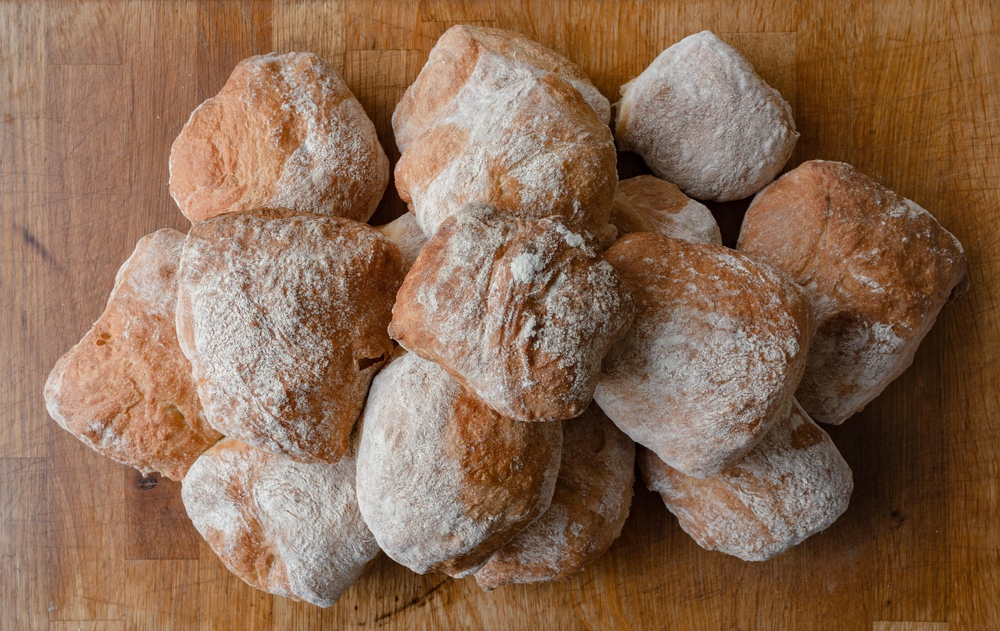

Ciabatta Bread!

Recipe for Ciabatta Bread
Follow this simple recipe to make deliscious, soft Ciabatta rolls perfect for sandwhiches!
Ingredients:
- 500g bread or all purpose flour
- 400g of water at room temperatue
- 10g fine sea salt
- 2g of instant yeast
Instructions:
- First combine our mix of flour, yeast and salt. It's much easier to evenly incorporate all of our ingrediants in water if we mix all of our dry ingrediants first.
- Take your dry mix, and add it slowly to your room temperatue water and mix. Once the dough is fully mixed, cover your mixing bowl and let the dough rest for 30 minutes.
- After 30 minutes of resting grab the edge of the dough and fold it over on itself. Turn the bowl, and stretch and fold a total of 4 times. Cover the bowl back up, and let it rest for another 30 minutes. Repeat 3-4 times.
- After your final stretch and fold let the dough sit until its grown in size and shows some bubbles from the yeast. Now you can pre-heat your oven to 500F.
- Once your oven is pre-heated line your baking dish with partchment paper and lightly flour it. Set your dough out on the partchment paper and shape the dough.
- Let the dough bake for 15-18 minutes at this temperatue, watching closely for color. A good tip to get a crunchy, colorful crust is to add several ice cubes to the baking dish. The steam from the melting ice will help develop a nice crust.
For additional recipes, head back to our Home page to see what else we have for recipes!